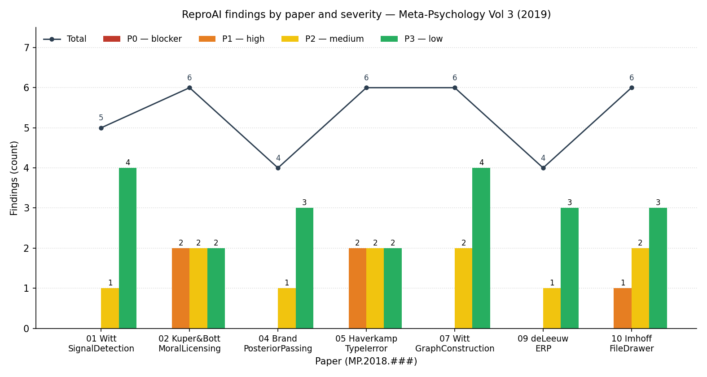

Engine: anomalyco/opencode (ReproAI) · rules: 2026.06.27 · audit date: 2026-09-10
Scope: All 10 articles in Volume 3 were screened. 7 are empirical and received a full per-paper ReproAI audit (claim inventory + independent re-implementation from the shipped open data + a per-paper REPROAI_REPORT.html and machine-readable reproai_reports/ JSON). 3 are non-empirical (a methods guide, a theoretical/statistical commentary, and an opinion piece) and were classified as out of scope for a numerical audit (no per-paper report produced).
Environment: Windows PowerShell 5.1; Python 3.8 (pandas, numpy, scipy, openpyxl, pdfplumber); R 4.6.1. Originals (paper.pdf, paper_extracted.txt) were left untouched; all work was done on copies under each paper's ReproAI/<id>/ folder.
Companion file: VOLUME3_REPROAI_SUMMARY.csv / VOLUME3_REPROAI_SUMMARY.xlsx (machine-readable per-paper table).
The volume reproduces well at the numerical level, with two papers showing substantive non-reproduction. Across the 7 empirical papers there are 31 findings: 0 P0, 5 P1, 10 P2, 16 P3. No blocker (P0) was found in any paper — no headline result was contradicted by an irreproducible pipeline or fabricated numbers. Four papers (01, 04, 07, 09) are near-exact reproductions: every reported statistic matches the shipped open data to the manuscript's own precision, independently in R and (where applicable) Python. Three papers (02, 05, 10) are partial reproductions: the core effect/claim survives, but a specific headline figure (the moral-licensing sample size k=76 and I²; the MLM-UN Type I error rate; the file-drawer open-data badges) does not reproduce from the archived materials. The P1 findings concentrate in these three papers and are almost entirely archival / transparency problems (missing or inconsistent open data), not invalid science. The highest-value remediation across the volume is ensuring the open artifacts actually contain what the badges claim.
| Severity | Count |
|---|---|
| Total findings (7 papers) | 31 |
| P0 — blocker | 0 |
| P1 — high | 5 |
| P2 — medium | 10 |
| P3 — low | 16 |
| Paper | ID | First author(s) | Reproduction verdict | Findings (P0/P1/P2/P3) | Key caveat |
|---|---|---|---|---|---|
| Signal Detection | MP.2018.871 | Witt | Near-exact | 0 / 0 / 1 / 4 (5) | Optional-stopping script simulates 40, not 20, studies |
| Moral Licensing | MP.2018.878 | Kuper & Bott | Partial | 0 / 2 / 2 / 2 (6) | Headline k=76 and I²=.26 not reproducible from archive |
| Posterior Passing | MP.2017.840 | Brand | Near-exact | 0 / 0 / 1 / 3 (4) | False-positive rates from shipped result file (seed-sensitive MCMC) |
| Type I Error (Sim) | MP.2018.898 | Haverkamp | Partial | 0 / 2 / 2 / 2 (6) | MLM-UN headline (35% vs ~5%) not reproduced; prose/table inconsistency |
| Graph Construction | MP.2018.895 | Witt | Near-exact | 0 / 0 / 2 / 4 (6) | Author script not runnable as shipped; '57 participants' inconsistent |
| ERP Music-Language | MP.2018.1481 | de Leeuw et al. | Near-exact | 0 / 0 / 1 / 3 (4) | Two appendix RATN BFs ~3%/1.5% low (MC noise) |
| File Drawer | MP.2018.880 | Imhoff & Messer | Partial | 0 / 1 / 2 / 3 (6) | Open-data / open-repro badges not substantiated (empty OSF component) |
| TOTAL | 0 / 5 / 10 / 16 (31) |

The three P1 findings that threaten a paper's credibility are all open-science failures rather than invalid statistics: MP.2018.880 (Imhoff) carries "Open data: Yes" and "Open and reproducible analysis: Yes" but the OSF data component is empty; MP.2018.878 (Kuper & Bott) cannot have its headline k=76 / I² recomputed from the archived meta-analytic data; MP.2018.898 (Haverkamp) ships only scripts and raster figures (no raw .sav / result tables), and its MLM-UN headline does not reproduce. In each case the underlying effect (moral-licensing main effect; rANOVA Type I control; file-drawer logic) is sound and reproduces — it is the specific headline number or the badge that fails. Recommendation for the journal: audit that "Open Data / Open Materials / Open Reproducible Analysis" badges are only awarded when the OSF component actually contains the data and a runnable script that regenerates the paper's tables.
Three papers are simulations or Bayesian MCMC (01, 04, 05). For these, exact single-run reproduction is not the right standard; the correct standard is drift/stability across runs. Papers 01 and 04 meet it (AUCs and false-positive rates stable; AUC_p≡AUC_BF exact; PP-vs-meta-BGLMM correlation near-identical). Paper 05 is the exception: the MLM-UN model is both seed-sensitive and computationally prohibitive at the full S=5000 (gls corSymm), and the reduced-S reimplementation diverges from the prose headline — flagged as P1. Where authors ship a fixed-seed result file (04), the audit can verify the exact reported number; where they ship only scripts (05), the audit must re-simulate and quantify drift.
The four "near-exact" papers (01, 04, 07, 09) share a property: the shipped open data + (runnable or easily re-implemented) script let an independent analyst regenerate every reported statistic to the manuscript's precision, in both R and Python. This is the target state. The recurring P2/P3 items in these papers are procedural, not scientific: a non-runnable analysis notebook (07), a mis-stated participant count (07), a Monte-Carlo-noise Bayes factor (09), and a trial-count off-by-one (07). None changes a conclusion.
All seven papers were pre-registered and earned open-practice badges. Where a deviation occurred it was usually disclosed (e.g., de Leeuw's non-preregistered, reviewer-requested RATN analysis; the conditional-exclusion cutoffs in the ERP and moral-licensing studies). The residual risk is silent divergence: a table using a different N than the text (07), a prose value inconsistent with its own table (05), and badges not backed by files (10). These are cheap to fix and are the most important things a replication-minded journal can enforce.
| Path | Contents |
|---|---|
VOLUME3_REPROAI_SUMMARY.csv / .xlsx | Machine-readable per-paper table (findings, verdicts, caveats, totals) |
VOLUME3_REPROAI_META_REPORT.html | This meta-report |
<paper>/ReproAI/<id>/REPROAI_REPORT.html | Per-paper house-style report (7 files, one per empirical paper) |
<paper>/ReproAI/<id>/extracted/manuscript_claims.md | Per-paper numbered claims inventory (C1…Cn), each checked |
<paper>/ReproAI/<id>/reproai_reports/{architecture_report,risk_register,advisory_plan}.json | Per-paper machine-readable design, risk register, and remediation plan |
<paper>/ReproAI/<id>/exec_check/ | Per-paper re-implementation scripts + console logs + retrieved open data/code |
<paper>/paper.pdf, paper_extracted.txt | Originals (untouched) |